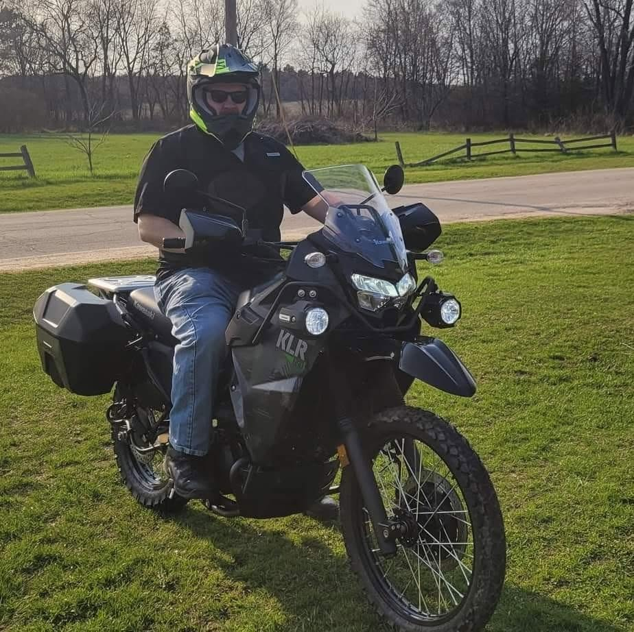
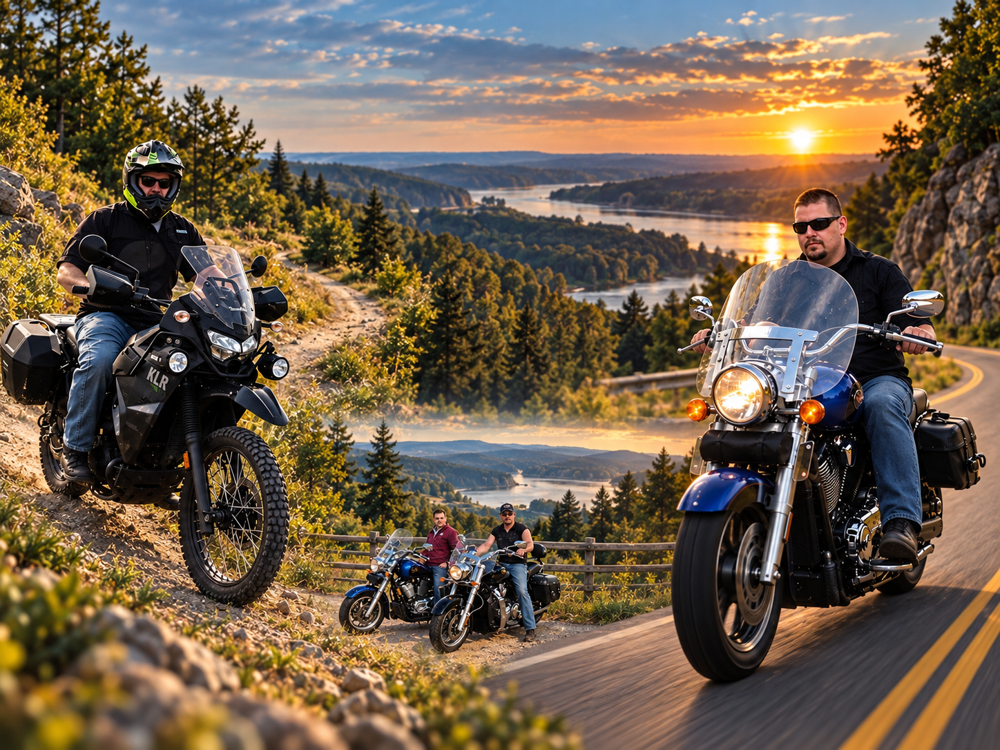

Go somewhere
Back roads, gravel, trails, scenic routes, small towns, and roads that make you wonder where they lead.

About Fun on 2 Wheels
I first learned how to ride by watching YouTube videos, then went out and put what I learned into practice. Ever since, I’ve enjoyed just about every kind of motorcycle — cruisers, adventure bikes, dual-sports, mini bikes, and anything else that looks like a good excuse to get out and ride.
Fun on 2 Wheels is a place to share that experience: the rides, the back roads, the trails, the bikes, and the unexpected places you find when you decide to keep going a little farther.
The Vision
The goal is simple: make the kind of motorcycle videos I enjoy watching. Genuine rides, interesting roads, useful observations, and the occasional wrong turn.
Back roads, gravel, trails, scenic routes, small towns, and roads that make you wonder where they lead.
Adventure bikes, cruisers, dual-sports, mini bikes, and whatever else adds something different to the ride.
The good rides, the mistakes, the discoveries, and what I actually learn along the way — without pretending to know everything.
What You'll Find
Most of the channel will be motorcycles: GoPro ride-alongs, exploring country roads and trails, motorcycle ownership, and the occasional comparison or gear topic when there’s something useful to say. Mini bikes fit right in, and every once in a while another kind of two-wheeled adventure might make an appearance too.
The point isn’t to turn every ride into a production. The point is to ride more, explore more, and bring you along when something interesting happens.

Follow the ride